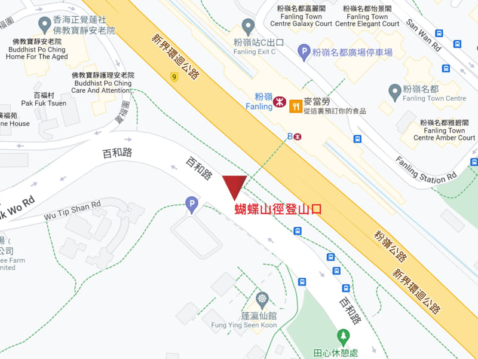
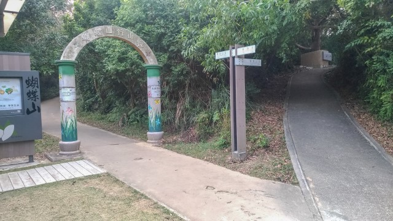
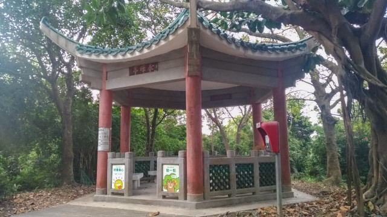
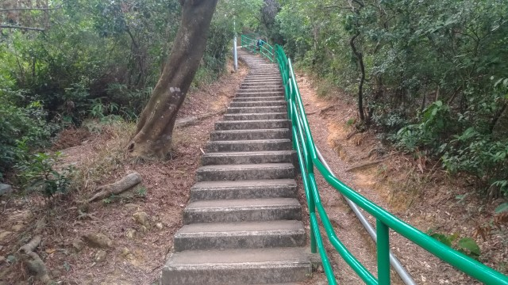
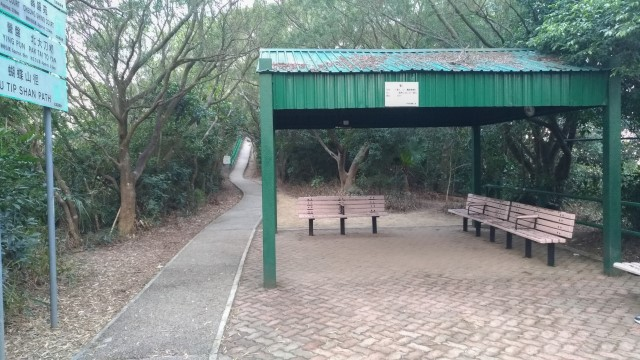
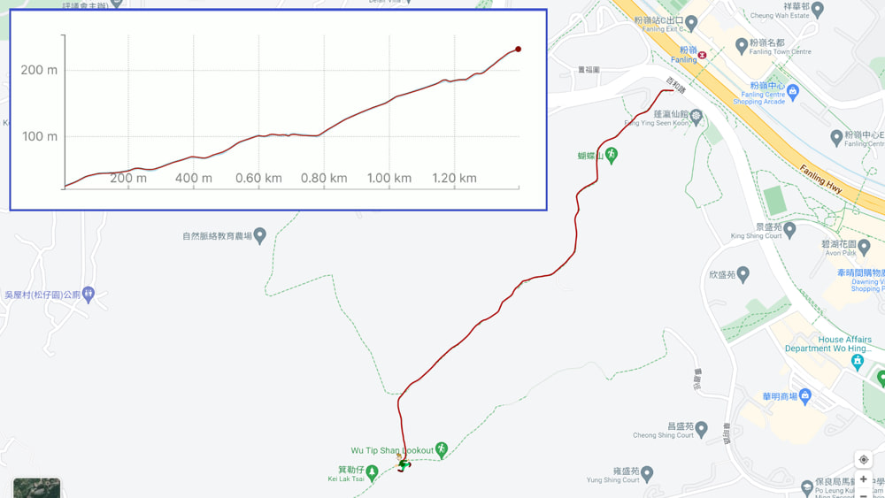

在2022年2月的某一天，我去粉嶺辦理完一些工作後, 趁太陽還未下山, 就利用這段時間攀登上蓬瀛仙館後面的蝴蝶山山頂。
蝴蝶山有一條很完善的登山步道, 名叫蝴蝶山徑, 只要沿這步道走便可以登上山頂。
蝴蝶山徑的山下入口就在蓬瀛仙館附近, 很容易便找到。
步入蝴蝶山徑, 首先是一段彎彎曲曲的上山長命斜, 走起來非常吃力。
走了十多分鐘, 來到山腰中的一個分叉路口。
按路口的路標所示:
↑ 往前的是蝴蝶山行山徑
→ 右邊的仍然是蝴蝶山徑。
在這裡猶豫了一會, 最後選擇了右邊的蝴蝶山徑繼續往上走。
稍後才知道, 其實兩條路最終都在前面會合。不過, 右邊的蝴蝶山徑會拐了一個大彎, 走多了一些路。
接著沿蝴蝶山徑繼續往上走。
經過一個涼亭 – 春暉亭。
繼續沿斜坡往上走。
斜坡的盡頭是一條彎彎曲曲、向上的長長天梯。
走上天梯後, 經過另一個涼亭。
接著是另一條彎彎曲曲、向上的長命斜。
長命斜的盡頭又是另一條彎彎曲曲、向上的長長天梯。
走上天梯後, 又經過另一個涼亭, 前面又是另一段斜坡。
這段山路的佈局都是重重覆覆, 永無止境, 令人感覺走進了迷離境界。
斜坡的盡頭又是另一條彎彎曲曲、向上的長長天梯。
走完這段長長天梯, 終於來到蝴蝶山的山頂。
從登山口計, 一直向上走了40分鐘才來到這裡。
環顧山頂四周, 都給茂盛的樹木重重圍繞, 什麼景色也看不到, 感覺白走了這一段山路!
接著掉頭循原路返回山下, 乘火車離開。
就這樣結束了這攀登粉嶺蝴蝶山的行程